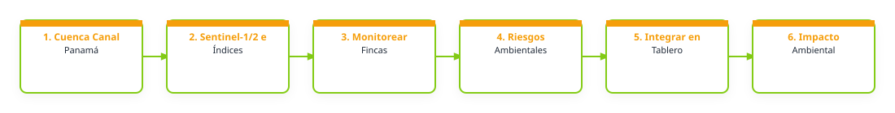

1. Problema que busca atender
Los proyectos de conservación y restauración se desarrollan en territorios dinámicos, donde factores como los incendios forestales, los cambios en la cobertura vegetal y la fragmentación del paisaje pueden modificar las condiciones del área incluso después de implementadas las intervenciones. Sin embargo, el seguimiento de estos procesos suele depender de información almacenada en diferentes bases de datos, informes técnicos, hojas de cálculo y plataformas independientes, dificultando su consulta y análisis de manera integrada. Actualmente, la organización se encuentra fortaleciendo la gestión de su información institucional; no obstante, persiste la necesidad de incorporar herramientas que permitan vincular esta información con datos geoespaciales actualizados y fuentes de monitoreo ambiental de consulta frecuente. Esto permitiría evaluar de forma más eficiente el comportamiento de las áreas de intervención, identificar posibles amenazas y detectar zonas donde podrían requerirse acciones complementarias de restauración o seguimiento. La disponibilidad de información centralizada contribuirá a mejorar el monitoreo de los proyectos, facilitar la elaboración de reportes periódicos y disponer de criterios técnicos más sólidos para priorizar actividades de conservación, restauración y manejo del territorio.
2. Relevancia del problema
Este problema es relevante porque la organización gestiona múltiples proyectos de conservación, restauración y manejo sostenible en diferentes territorios, cada uno con características ambientales y necesidades de seguimiento particulares. A medida que aumenta la cantidad de información generada por estos proyectos, se vuelve más importante contar con mecanismos que permitan consolidarla, actualizarla y consultarla de forma eficiente. La falta de información oportuna y centralizada dificulta identificar cambios que puedan estar ocurriendo en las áreas de intervención, como incendios forestales, pérdida de cobertura boscosa o afectaciones en zonas de importancia para la conectividad ecológica. Asimismo, incrementa el tiempo requerido para recopilar información dispersa, elaborar reportes periódicos y evaluar el estado de los territorios donde se ejecutan las acciones de conservación y restauración. Disponer de información actualizada permitirá fortalecer el seguimiento de los proyectos, mejorar la capacidad de respuesta ante posibles amenazas y facilitar la priorización de acciones de monitoreo, conservación y restauración en función de las condiciones observadas en el territorio.
3. Producto esperado
Tipo de entregable: Mapa; Capa geoespacial; Indicador; Script; Flujo de trabajo; Reporte; Dashboard / tablero; Visor web; Aplicación; Base de datos; Repositorio técnico
Descripción del producto: Una plataforma de monitoreo territorial que permita visualizar en un solo lugar las subcuencas de la Cuenca Hidrográfica del Canal de Panamá, sus áreas de intervención y el estado de los territorios donde se desarrollan proyectos de conservación y restauración. El usuario podrá consultar información geoespacial actualizada, monitorear cambios en la cobertura boscosa, visualizar alertas de incendios, identificar posibles afectaciones en corredores de conectividad ecológica y detectar áreas con potencial para acciones de restauración.Asimismo, permitirá visualizar areas de interés, gráficos e informes para el seguimiento de proyectos y la elaboración de reportes periódicos, facilitando el análisis de información ambiental y la toma de decisiones basada en evidencia. La información estará centralizada y organizada para que los equipos técnicos puedan consultar, interpretar y utilizar los datos de manera más eficiente, utilizando las subcuencas como unidad de análisis para el monitoreo territorial.
Componentes de despliegue sugeridos: Google Earth Engine App; Dashboard; Base de datos; No estoy seguro/a
Nivel de acceso previsto: institucional
Forma de uso institucional: Se espera que la información sea consultada en línea por los equipos técnicos para el seguimiento de proyectos, el monitoreo de las subcuencas de la Cuenca Hidrográfica del Canal de Panamá y la identificación de áreas prioritarias para conservación y restauración. Los resultados podrán utilizarse durante reuniones técnicas, procesos de planificación, elaboración de informes y evaluación de intervenciones en el territorio. Asimismo, podrán servir como apoyo para la validación en campo y la toma de decisiones basada en información geoespacial actualizada.
Requiere actualización: si
Frecuencia / Método de actualización: La actualización se realizaría de forma semiautomática. Los productos satelitales e indicadores ambientales podrían actualizarse periódicamente a partir de fuentes de datos abiertas, mientras que la información territorial e institucional se incorporaría manualmente cuando se generen nuevos datos o se requieran ajustes. Se espera realizar actualizaciones periódicas para mantener información reciente sobre cobertura boscosa, incendios y otros indicadores relevantes para el monitoreo de las subcuencas.
4. Flujo de trabajo preliminar
El siguiente diagrama conceptualiza el procesamiento de datos y flujo técnico sugerido para la solución:

Descripción del flujo metodológico imaginado:
Se organizará la información geoespacial disponible de la Cuenca Hidrográfica del Canal de Panamá y sus subcuencas, junto con capas de ríos, caminos, límites administrativos y corredores biológicos. Posteriormente, se utilizarán imágenes satelitales para analizar cambios en la cobertura del suelo, incendios e indicadores ambientales relevantes. Los resultados se complementarán con análisis de conectividad y priorización de áreas para conservación y restauración, integrándose finalmente en un visor para consulta, monitoreo y generación de reportes.
Algoritmos o índices clave: NDVI, NDMI, NBR y dNBR; análisis multitemporal y detección de cambios; métricas de paisaje y conectividad ecológica; análisis de priorización espacial; y el uso de Google Earth Engine, ArcGIS Pro y QGIS para el procesamiento, análisis y visualización de datos satelitales y territoriales.
5. Datos e insumos identificados
Insumos satelitales y capas locales necesarias para el despliegue del prototipo:
| Insumo / Variable | Detalle en la Ficha |
|---|---|
| Datos Satelitales / Fuentes Copernicus | Sentinel-2 / óptico; Copernicus Land Monitoring Service; Copernicus DEM; Productos de incendios; Productos de vegetación; Biomasa / carbono; Agua / humedad / humedales; Datos de campo; Límites locales / institucionales |
| Datos Locales Disponibles | Se dispone de información geoespacial de la Cuenca Hidrográfica del Canal de Panamá, incluyendo los límites de la cuenca y sus subcuencas, así como capas de ríos, caminos y límites administrativos. Adicionalmente, se cuenta con la capa de corredores biológicos de Panamá elaborada por Almanaque Azul, la cual puede utilizarse para análisis de conectividad ecológica e identificación de posibles amenazas sobre áreas estratégicas para la conservación. |
| Datos Requeridos / Faltantes | se requiere identificar fuentes de datos actualizadas para el monitoreo de incendios, cobertura boscosa y conectividad ecológica, así como conocer metodologías y productos geoespaciales adecuados para priorizar áreas de restauración e integrar esta información con los datos territoriales disponibles. |
| Documento Relacionado | No indicado en la ficha |
| Enlaces Externos / Observaciones | No indicado en la ficha |